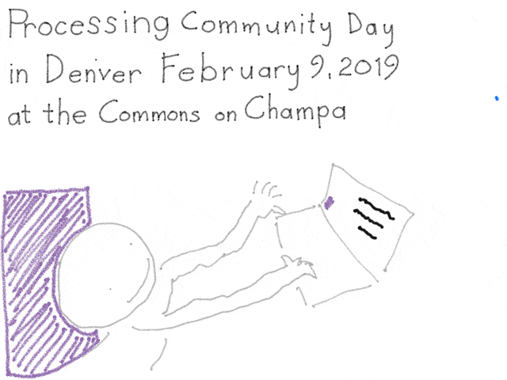
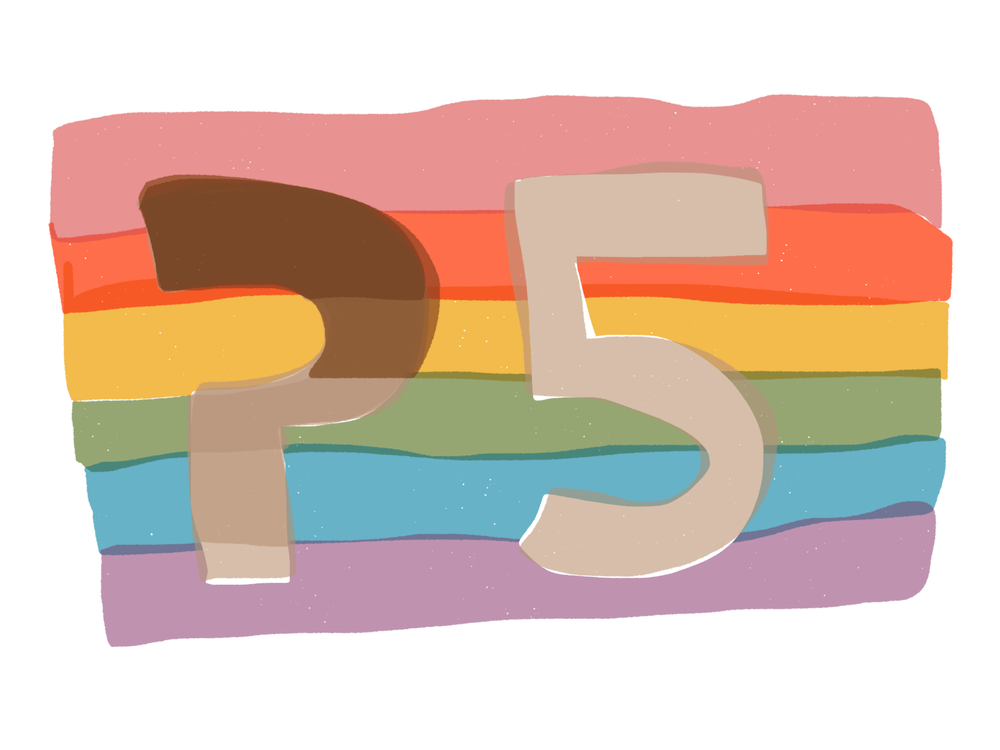

Processing Community Day @ Denver
PCD @ Denver is an inclusive event that will bring together people of all ages to celebrate and explore art, code, and community. The day-long event features workshops, community sharing, and a lot of inspiration! Processing Community Day is just as much about inviting in new people to creative coding as it is about gathering current lovers of Processing. The PCD team is dedicated to providing a harassment-free experience for everyone, regardless of gender, gender identity and expression, sexual orientation, disability, mental illness, neurotype, physical appearance, body, age, race, ethnicity, nationality, language, or religion. We do not tolerate harassment of participants in any form.
The morning workshop will introduce P5.js as a tool for anyone, even if you have not programmed before. The middle of the day will have spaces for community Show and Tell and other guests to share inspiration. Additional workshops in the afternoon will dive into specific topics like playing with sound, webcams, or animation. Throughout the day you will have time to meet other members of the community!
What is Processing?
Processing is a flexible software sketchbook and a language for learning how to code within the context of the visual arts. Since 2001, Processing has promoted software literacy within the visual arts and visual literacy within technology. There are tens of thousands of students, artists, designers, researchers, and hobbyists who use Processing for learning and prototyping.
The mission of the Processing Foundation is to promote software literacy within the visual arts, and visual literacy within technology-related fields — and to make these fields accessible to diverse communities. The goal is to empower people of all interests and backgrounds to learn how to program and make creative work with code, especially those who might not otherwise have access to these tools and resources. Processing does this by developing and distributing a group of related software projects, which includes Processing (Java), p5.js (JavaScript), and Processing.py (Python), and facilitating partnerships and collaborations with allied organizations and individuals, to build a more diverse community around software and the arts. Processing Community Day is happening around the globe and is a key part of this outreach and community building.
When?
February 9, 2019, 10am-6pm MST
Where?
Commons on Champa
1245 Champa St.
Denver, CO
Schedule
- Introduction to Creative Coding with P5.js - suitable for everyone, even if you have not coded before.
- Share sketches and code with others in the Oblong Room
- Several workshops ranging from 30-60min in length will be announced soon!
- Share sketches and code with others in the Oblong Room
Featured Speakers
Ari Melenciano
Ari Melenciano is a Brooklyn-based interdisciplinary artist, designer, creative technologist, researcher, educator and activist who is passionate about exploring the relationships between various forms of design and the human experience. They will speak about their work and help us cap off the day with a DJ/VJ performance! Check out their work here: ariciano.com
Joshua Davis
Joshua Davis is an award-winning designer, technologist, author and artist in new media, and is acclaimed for his role in designing the visualization of IBM’s Watson, the intelligent computer program capable of answering questions, for the quiz show Jeopardy. His work has been exhibited at the Tate Modern in London, the Design Museum in London, le Centre Pompidou in France, the Institute of Contemporary Arts in London, PS.1 MoMA in New York, the Cooper Hewitt, Smithsonian Design Museum and more. He will share his artwork and lead a workshop on getting Professional with Processing. Check out his work here: joshuadavis.com
Tickets
Tickets for Processing Community Day @ Denver are completely FREE FOR ALL. The tickets will allow you to participate in Workshops, share at the Show and Tell, have a free lunch and snacks, and even get some special PCD @ Denver gifts to take home with you. In order to understand the needs of each person, we ask that you fill out this registration form: goo.gl/forms/DGsbcP2IoCfCxxfA2
The form will help us plan the day and purchase the right amount of food. With your registration you will get a QR code for your lunch. While walk-in participants will be welcomed, we cannot guarantee lunch for walk-ins and so strongly encourage you to register for the event.
Families and Childcare
PCD @ Denver provides free on-site childcare, and access to a private room for breastfeeding and pumping. On the registration form, please make sure that you let us know the number of children you plan to bring and whether you will need on-site childcare and access to the breastfeeding facility.
Our entire day of programming is open to all ages! Teenagers and children are welcomed to participate in the workshops and to present at the Show & Tell.
All children under 12 years of age must be accompanied by a parent or a guardian throughout the conference.
Accessibility
Our venue is wheelchair-accessible, and we will provide reserved seatings for attendees with mobility devices.
Please contact us by Febuary 1st, 2019 if you would like to request ASL. For any other requests, please fill out our survey so that we can learn more about your needs.
Parking & Transportation
The closest parking lot to Commons on Champa is the DCPA lot located on 13th St between Arapahoe and Champa. Visitor parking is $15 that day, paid when you enter. Space is not guaranteed and rates could change.
We strongly recommend arranging carpool, using a ridesharing service or public transportation to commute to the venue. We chose the venue because you can walk two blocks from the 16th Street free Mall Ride which can get you to and from Union Station, and it is also across the street from the Theatre District - Convention Center stop for the D, F, and H Light Rail lines. The nearest bus stop is 13th and Champa with additional stops and schedule information here.
Code of Conduct
All participants in Processing Community Day (PCD) are required to agree to the following Code of Conduct. This includes all attendees, speakers, performers, work- shop leaders, patrons (sponsors), volunteers, and staff.
The PCD team is dedicated to providing a harassment-free experience for everyone, regardless of gender, gender identity and expression, sexual orientation, disability, mental illness, neurotype, physical appearance, body, age, race, ethnicity, nationality, language, or religion. We do not tolerate harassment of participants in any form.
Be mindful of your language — Engage with community members, mentors, and contributors with respect and good intention.
Use your best judgement — If it will possibly make others uncomfortable, do not say it.
Be respectful — While disagreements may arise, it is not an opportunity to attack or threaten someone else’s thoughts and/or opinions. Remember to approach every situation with patience, understanding, and great care.
Be intentional — Consider how your contribution will affect others in the community.
Be open minded — Embrace new people and new ideas. Our community is continually evolving and we welcome positive change.
Anyone participant who violates this Code of Conduct may be sanctioned or expelled from PCD at the discretion of the PCD organizers.
Definitions of Harassment include:
- Offensive comments related to gender, gender identity and expression, sexual orientation, disability, mental illness, neurotype, physical appearance, body, age, race, ethnicity, nationality, language, or religion
- Unwelcome comments regarding a person’s lifestyle choices and practices, including those related to food, health, parenting, drugs, and employment
- Deliberate misgendering or use of ‘dead’ or rejected names
- Gratuitous or off-topic sexual images or behaviour in spaces where they’re not appropriate
- Physical contact and simulated physical contact (eg, textual descriptions like “hug” or “backrub”) without consent or after a request to stop
- Threats of violence
- Incitement of violence towards any individual, including encouraging a person to commit suicide or to engage in self-harm
- Deliberate intimidation
- Stalking or following
- Harassing photography or recording, including logging online activity for harassment purposes
- Sustained disruption of discussion
- Unwelcome sexual attention
- Pattern of inappropriate social contact, such as requesting/assuming inappropriate levels of intimacy with others
- Continued one-on-one communication after requests to cease
- Deliberate “outing” of any aspect of a person’s identity without their consent except as necessary to protect other PCD community members or other vulnerable people from intentional abuse
- Publication of non-harassing private communication without consent by the involved parties
- ‘Reverse’ -isms, including ‘reverse racism,’ ‘reverse sexism,’ and ‘cisphobia’
- Reasonable communication of boundaries, such as “leave me alone,” “go away,” or “I’m not discussing this with you.”
- Communicating in a ‘tone’ you don’t find congenial
- Criticizing racist, sexist, cissexist, or otherwise oppressive behavior or assumptions
Consequences, Reporting and Enforcement on Processing Community Day Please reach out to any of the on-site organizers (wearing special PCD @ Denver shirts)who will be trained in how to address and report any incidents attendees bring to their attention. You may also contact us via email at christopher.coleman@du.edu.
Participants asked to stop any harassing behavior are expected to comply immediately. If a participant engages in harassing behavior, the PCD team may take action we deem appropriate, up to and including expulsion from all PCD spaces (both on and offline) and identification of the participant as a harasser to other PCD community members and/or the general public.